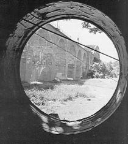
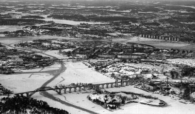
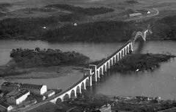
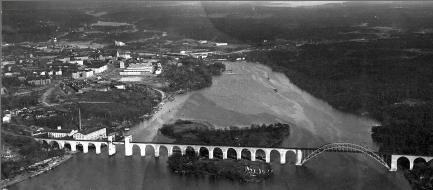
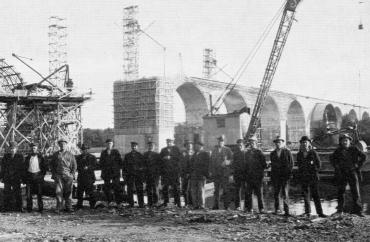
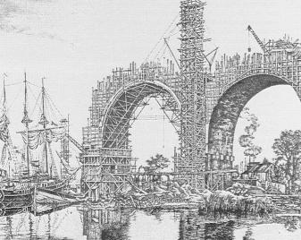
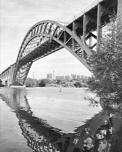
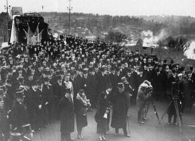

|
Årstabron
Av Lennart Fridh
Lennart tillhör sedan 3 år tillbaka Tantofolkets studiecirkel om Årstaholmar.
Lennart har så gott som hela sitt liv varit knuten till SJ. Han skriver
Stockholmiana.
(Rune Sahlström)
I Dagens Nyheter den 12 november skaldade Alf Henriksson: Aldrig upphör
den synen att vara en sensation, som öppnar sig när man med sydliga tåg rullar
ut på Årstabron. Man har tittat på Huddinge, Stuvsta och Älvsjö förströdd och
trött och så öppnar sig plötsligt den stora synen som man tusen gånger har mött.
Båtarna vilar på Årstaholmar, ett pråmsläp går mot Skanstull, bojar och
fyrlyktor gungar lätt för de mjuka svallens skull, skogarna blånar på Mälarens
öar, fjärran stadsdelar skrapar skyn, - aldrig slutar det att vara en sensation att
mötas av denna syn."
Även om skalden skapat lödigare dikter än denna, kan man oreserverat
instämma med honom. Ingen annan huvudstad i Europa torde ha en så magnifik
järnvägsinfart (och för den delen även utfart) som Stockholm över Årstabron.
Bron - fortfarande Sveriges största järnvägsbro - har blivit till ett av stadens mer
markanta landmärken. Med sina valvbågar likt en romersk akvedukt förbinder
den Årstalandet med Södermalm. Av både geografiska och ekonomiska skäl
kom bron att dras över Årstaholmar, något som givetvis innebar ett stort ingrepp
i holmarnas orörda natur. Man vågar påstå att större delen av holmarna trots
detta fortfarande hör till de jungfruligaste områdena inom stadens gränser.
|

 Årstabron från vindsfönstret i gården Årstabron från vindsfönstret i gården
|
|
Bron tillkom naturligtvis inte utan långdragna födslovåndor. Sedan den s k
sammanbindningsbanan blivit färdig under 1860-talet, hade all sjötrafik mellan
Mälaren och Saltsjön varit hänvisad att korsa järnvägen vid Söderström. Den dåtida
järnvägsbron - en svängbro - mellan Södermalm och Riddarholmen låg endast 2,25
meter över medelvattenytan. Bron måste alltså i regel öppnas vid all passage av
fartyg. Dessas storlek begränsades också av den gamla slussens kapacitet.
Olägenheterna blev slutligen så stora, att något måste göras för att förbättra
trafiksituationen.
Frågan om en ny farled för mer djupgående fartyg mellan Mälaren och Saltsjön hade
redan utretts under flera års tid. Genom en pristävling hade man fått fram ett segrande
förslag, som avsåg en led genom Hammarby sjö. I maj 1914 beslöt så stadsfullmäktige
att en farled för fartyg med 5,5 meters djupgående skulle anläggas från Danviken vid
Saltsjön genom Hammarby sjö - Årstaviken - Liljeholmsviken till Mälaren. Vid
Skanstull skulle en sluss anläggas. Förslaget förutsatte att västra stambanan skulle få
ett nytt läge. Tanken att
|
behålla sträckningen över den låga bron vid Liljeholmen
förkastades på ett tidigt stadium. I stället förutsågs en högbro över Årstaviken vid
Årstaholmar. Den nya bron skulle ha en segelfri höjd av 26 meter och dessutom vara
försedd med rörligt spann för de fartyg som krävde större höjd. Den gamla bron vid
Liljeholmen skulle då slopas.
I oktober 1915 antog riksdagen regeringens proposition om byggandet av den
nya järnvägsbron. Samtidigt överlämnade järnvägsstyrelsen till regeringen ett
förslag till ordnade av bangårdarna i Stockholm. För att närmare utreda förslaget
bildades en grupp av sakkunniga, kallad 1915 års bangårdskommission. Som ett
kuriosum kan nämnas att förslaget bl a upptog anläggandet av en stor
rangerbangård i och invid Tantolunden samt en ny järnvägstunnel under Söder.
Lyckligtvis kom inte dessa idéer till utförande.
I juni 1918 fick järnvägsstyrelsen tillstånd att disponera högst 35 000 kr för att utlysa
en internationell pristävling om brons utformning. När tävlingstiden hade utgått - den
15 maj 1919 - hade 34 förslag inkommit. Prisnämnden beslöt att belöna tre förslag och
föreslå ytterligare fyra till inköp. Första priset gick till förslag nr 9 "Simplicitas",
inlämnat av Maschinenfabrik-Augsburg-Nürnberg AG m fl, däri inbegripna arkitekt
Sven Markelius och Olof Lundgren, Stockholm.
|
Förutsättningarna för brobygget var följande:
- bron skulle på en sträcka av 75 meter i längdriktningen lämna en fri
seglingshöjd av 26 meter över medelvattenytan;
- bron skulle anordnas med en 25 meter bred genomfartsöppning, som vid
behov kunde släppa igenom fartyg med upp till 32 meters höjd;
- passage under eller genom bron skulle anordnas på så sätt, att sjöfarten i
möjligaste mån skulle kunna utnyttja farledens naturliga förutsättningar
vid navigeringen;
- det skulle vara möjligt att sedermera bygga en gatubro ovanpå
järnvägsbron.
|
|

|
I förslagen inritades brons läge över Årstaholmar betydligt
östligare - i stort sett
tvärs över Bergholmen - än vad som slutligen blev fallet i det fastställda läget.
Det rörliga spannets placering varierade åtskilligt. En del förslag upptog spannet
omedelbart söder om holmarna och i anslutning till den fasta
genomfartsöppningen.
Andra hade placerat det rörliga spannet på norra delen av
Bergholmen. Det ansågs att just denna placering skulle erbjuda stora
sjöfartstekniska fördelar. En kanal måste då byggas genom näset mellan Berg-
och Lillholmen. Man beräknade dock att dessa kostnader skulle understiga
kostnaderna för uppförandet av pelarna för lyftspannet i södra sundet.
Genom pristävlingen hade man alltså fått fram flera goda förslag till
högbron, men det dröjde ännu några år, innan arbetena med linjeomläggningen
och brobyggnaden kunde sättas igång. Under tiden blev de förslag som skulle
tjäna som underlag för bygget både reviderade och i vissa delar helt omarbetade.
Den slutliga konstruktionen kom därför att förete rätt väsentliga olikheter
jämfört med första pristagarens förslag. Bland annat flyttades brons läge
västerut, över Ahlholmen, vilket innebar att det rörliga spannet kunde placeras i
norra farleden utan kanal mellan holmarna.

|
|
Järnvägsstyrelsens beräkning av kostnaderna för banomläggning och brobygge slutade
på 9,8 milj kr. Brokonstruktionen fastställdes slutligen enligt följande:
- ett 150 meter långt fast spann av järn över huvudfarleden söder om
Årstaholmar;
- ett 28 meter långt lyftspann över farleden norr om holmarna;
- ett antal betongviadukter med sex valvspann norr om lyftspannet,
elva över Ahlholmen och två på Årstalandet. Viadukternas
normalbredd är nio meter och är avsedda att rymma dubbla
järnvägsspår;
- den totala längden av bron mellan landfästena uppgår
till 753 meter.
|
Bottenförhållandena i Årstaviken var ganska besvärliga. Största
vattendjupen uppgick till ca fyra meter norr om Årstaholmar och tio meter
söder om holmarna. Bottenavlagringarna utgjordes av en mestadels
mycket lös lera och under denna ett lager pinnmo eller sand- och
grusblandad lera, som vilade direkt på berggrunden. Denna var bemängd
av större och mindre rullstensblock. Avlagringarnas djup varierade mellan
0 och 20 meter.
Bron vilar på betongfundament som i regel är nedförda till berget.
Undantaget är ett pelarfundament över en förkastning i norra farleden. Av
de elva fundament som står i vattnet är fem utförda i kassunteknik och de
övriga inom fångdammar eller spånt, dels i öppet schakt dels med
under vattensgjutning.
Kassuntekniken innebar att man använde sig av lådor utan botten - s k
kassuner - byggda av armerad betong. Dessa sänktes ned på den plats där
fundamentet skulle uppföras. Kassunerna tillfördes komprimerad luft
genom särskilda ledningar. Härigenom undanträngdes vattnet i kassunen
som nu kunde användas som arbetskammare. Bottnen under kassunen
schaktades ut undan för undan tills man nådde tillräckligt fast grund.
Under kassunens sänkning gjöt man pelarkonstruktionen ovanpå
kassunen. När man uppnått fast grund fylldes kassunen med betong.
Förbindelsen med yttervärlden förmedlades för såväl arbetare som
uttagna schaktmassor genom vertikala plåtrör, som uppåt avslutades med s
k luftslussar.
|
Tekniken var ny (den hade tidigare endast använts vid byggandet av S:t
Eriksbron) och skulle ge upphov till flera arbetskonflikter, som avsevärt
försenade byggnadsarbetet. Lyftspannet, vars lyfthöjd uppgick till 10,6 meter
bestod av två stålbalkar med 10,5 meters inbördes avstånd och mellanliggande
tvär- och långreglar. Det elektriska maskineriet var inbyggt i själva lyftspannet.
Manövreringen skedde från ett manöverrum, placerat utanpå den norra
upplagspelaren. Det var på sin tid den första lyftbron i landet. Sedan många år
är maskineriet borttaget och
|
|

|
bron fast i hela sin längd. Bågspannet över
huvudfarleden söder om Årstaholmar har 150,8 meters spännvidd. Spannet
består av två fackverksbågar på ett avstånd från varandra av 12,7 meter. Mellan
fackverksbågarna bärs spåret upp av nitade tvärreglar och helvalsade långreglar.
|

|
|
För uppsättningen av bågspannet byggdes på pålar en fast montageställning,
huvudsakligen av trä. På denna löpte en eldriven travers med 22 tons
bärförmåga.
Här några siffror. I brons viadukter ingår sammanlagt ca 55 000 kbm betong.
Bågspannet har en sammanlagd järnvikt av ca 2 350 ton. I lyftspannet ingår 310 ton
järnkonstruktioner, 70 ton stålgjutgods och maskinella anordningar samt ca 190 ton
motviktsmaterial av tackjärn. Ca 14000 kbm sten- och makadamfyllning har lagts in i
viadukternas valv.
Man hade avsett att inleda byggnadsarbetena under hösten 1923. Redan från början
försenades dock igångsättningen av
|
den utredning att bygga en gatubro ovanpå
järnvägsbron som stadsfullmäktige hade beslutat. Utredningen om gatubron blev klar
först i mars 1925 och de första arbetena på Årstabron - djupgrundläggningen -
påbörjades i mitten av april 1925.
Grundläggningsarbetet hade på entreprenad anförtrotts AB Fundament, ett svenskt
dotterföretag till en tysk konstruktionsfirma. Arbetet hann emellertid bara pågå en
dag, innan den första strejken bröt ut. De åttio arbetarna som tjänade mellan 1,45
och 1,80 i timmen krävde en femtioprocentig löneökning med motivering att det
rörde sig om ett riskfyllt arbete i vatten. AB Fundament bestred detta, varpå
arbetsplatsen förklarades i blockad. Konflikten varade tre månader.
|
På sommaren 1926 utbröt nya stridigheter. Den här gången krävde arbetarna att
sjukersättningen skulle höjas med tio kronor dagen. Arbetsgivaren gick bara med
på fyra kronor. Att arbetet verkligen var hälsofarligt visar det s k fältlasarett som
arbetsledningen såg sig tvungen att inrätta vid brobygget. Det rörde sig i
verkligheten om de tidigare omnämnda luftslussarna. Dessa innehöll luft med
samma tryck som arbetarna varit utsatta för under arbetet nere i kassunerna.
Trycket sänktes sakta till ytterluftens nivå för att undvika s k dykarsjuka. Det
kunde inträffa att arbetarna efter arbetet - alltså på sin fritid - var tvungna att
tillbringa flera timmar i luftslussarna.
Det blev följaktligen en ny arbetskonflikt. Företaget svarade med att sätta in
tyska, oorganiserade arbetare, s k svartfötter. Det kom också till smärre slagsmål
mellan tyskar och de strejkande.
Järnvägsstyrelsen hade nu fått nog och sade upp kontraktet med
|
|

Stig Borglind: Årstabron
|
entreprenören i
slutet av oktober 1926. SJ begärde också miljonbelopp i skadestånd men i stället
tilldömdes AB Fundament 200 000 kr i skadestånd för det brutna kontraktet. Endast
en tredjedel av det kontrakterade arbetet hade då utförts.
SJ utförde sedan resterande arbeten i egen regi. De nämnda konflikterna hade
emellertid försenat arbetena omkring ett och ett halvt år. Grundläggningen kunde
avslutas först i mitten av mars 1928. Som en konsekvens av detta förrycktes den
uppgjorda arbetsplanen för alla övriga arbeten som ju var beroende av
grundläggningen. Brobyggnaden i sin helhet försenades sålunda ytterligare två år
utöver den försening som utredningen om gatubron hade förorsakat.
Montage- och betongarbetena ovan jord gick emellertid med rekordfart och bron var
i stort sett färdig någon månad före den fastställda invigningen i slutet av november
1929. Den sammanlagda verkliga byggnadskostnaden översteg avsevärt den
beräknade och uppgick till 11 miljoner.
Redan som byggarbetsplats hade Årstabron imponerande dimensioner och inspirerade
bl a den kände kulturjournalisten Gustaf Näsström till följande opus i Stockholms
Dagblad:

Foto: Erik Liljeroth, Stockholm - ett bildverk
|
|
"Det väldigaste konstverk som för närvarande skapas i Stockholms stad, målas
icke på duk, modelleras icke i lera, komponeras icke i toner - det gjuts i betong
och byggs i granit högt över Årstavikens vatten mellan Söder och
Liljeholmslandet. Det är Årstabron, ett konstverk av samma art och rang som
romarnas akvedukter. Den hör hemma här och den tillför hela området ett
enastående skönhetsvärde."
Så var då den stora dagen inne. Måndagen den 25 november 1929 skulle
Hammarbyleden och Årstabron högtidligen invigas av H M Konungen. Dagen innan
hade SJ generalrepeterat hela ceremonien.
Klockan 10 lade ångfartygen Viking, Birger Jarl och Saltsjön ut från
Räntmästartrappan med sammanlagt 1000 inbjudna ombord.
Armadan passerade Hammarbyleden, som så att säga invigdes i förbifarten med en
ceremoni vid slussen vid Skanstull. Fartygen fortsatte därefter genom Årstaviken fram
till Liljeholmen. Viking med de kungliga gästerna ombord angjorde bryggan och
passagerarna debarkerade. SJ:s legendariske generaldirektör Axel Granholm stod
beredd att välkomna de kungliga och övriga honoratiores. Till de kungliga damerna
överräckte Granholm magnifika rosenbuketter, röda rosor till kronprinsessan Louise
och skära till prinsessan Ingrid.
|
Passagerarna på Viking fick nu byta till det väntande, flaggprydda invigningståget.
Övriga fick stanna kvar på Saltsjön och Birger jarl och beskåda invigningen av
Årstabron från sjösidan. Invigningståget backade upp till växeln vid Västberga, där
det körde in på det nya dubbelspåret och ut på bron. Här stannade det ett stycke
framför lyftspannet, som befann sig i upphissat läge. På murverket ovanför den
södra klaffpelaren kunde man läsa följande inskription: "Denna bro uppfördes
under konung Gustaf V:s regering 1923-1929."
Järnvägsmännens musikkår spelade när de inbjudna steg av tåget på en för
tillfället utlagd plattform. Arbetarna och övrig personal vid brobygget var i
förväg samlade på bron. Generaldirektör Granholm höll ett anförande (av
DN:s reporter betecknat som "klämmigt") och anhöll, att konungen måtte
förklara bron invigd och låta lyftspannet gå ned - "den vindbrygga som ännu
spärrar framför stadens port."
|

|
|
Kungen höll ett kort svarstal, tackade alla som deltagit i bygget och tryckte på
den avsedda knappen. Och se, lyftspannet sjönk sakta ned till järnvägsspårens
nivå. Granholm utbringade nu ett leve för kungen, följt av Kungssången.
Samtidigt började dynamitsaluten dundra från Årstaholmar - 21 skott.
Därpå utdelade kungen s k nådevedermälen till förtjänta chefspersoner:
"Nordstjärnan" till arbetschefen Schaltz och brobyggnadschefen Ernst Nilsson
samt "Vasen" till entreprenadchefen H-E Nilsson. De icke fullt så betydande
medarbetarna fick nöja sig med ett antal silvermedaljer för "nit och redlighet i
rikets tjänst".
|
De kungliga skrev sedan sina namn på en stentavla, avsedd att fällas in i
bron. Därmed var högtidligheten till ända och invigningståget fortsatte till
Centralstationen med sina celebra passagerare. Följande dag stängdes ena spåret
på den gamla bron vid Liljeholmen och ytterligare en dag senare även det andra,
varefter rivningen av bron omedelbart satte igång.
Det kan vara lämpligt att sluta med den lätt pekoralistiska "Visa i folkton"
eller "Rallarens avsked" som signaturen "Den blyge" publicerade under "Namn
och Nytt" i Dagens Nyheter den 24 november 1929.
"Ja, nu är det sistaste spadtaget klart på banan uppå
Årsta bro!
Och nu slamra hjulen mot skarvarna snart,
akado, akado, akado!
Och nu borde rallarna sig hemåt begiva.
Men var är hans hem? Jo, hos Norrbottens driva,
på skåningens slätt och smålänningens mo,
akado, akado, akado!"
Bilder från byggnationen av den nya Årstabron i oktober 2003.
|
|


{kind=link}
{kind=link}
{kind=link}